Física para Ingeniería
El contacto mas importante que tenemos con el mundo se logra por medio del sentido de la vista; eso explica por qué la óptica es una de las ramas mas antiguas de la ciencia y mucho antes de que se comenzaran los estudios de los fenómenos la óptica ya se usaban espejos y lentes para mejorar la visión los espejos se usaban las mujeres para verse en ellos desde la época de los egipcios (1900 a. C.). y la primera mención al fenómeno de la refracción se encuentra en el libro de platón república. Euclides (300 a. C.). estableció en su libro catóptrica la ley de la reflexión y propiedades de espejos esféricos.
En 1972 newton público un documento científico en el que describía sus experimentos con el fenómeno de dispersión cromática de la luz en prismas y probo que se obtiene luz blanca con la superposición de los colores. Newton pensó que la luz estaba formada por corpúsculos de diferentes tamaños y velocidades y propuso el telescopio reflector como una alternativa para evitar la aberración cromática de las lentes.
La óptica es la ciencia que estudia los orígenes, la propagación y la detección de la luz y se entiende no solo por luz la radiación electromagnética visible, también la infrarroja y ultravioleta. La luz es una onda electromagnética, como una inda de radio, pero su frecuencia es mayor y su longitud de onda menor. Por ejemplo, la frecuencia de luz amarilla es de 5.4 x10^^8 MHz, y le corresponde una longitud de onda de 5.6x10^-5 cm.
malacara, Daniel. (2015). óptica básica (3.ª ed., p. 29). México: ediciones científicas universitarias. México: ediciones científicas universitarias.
En la actualidad se sabe que el intervalo de frecuencias del espectro electromagnético es muy grande La longitud de onda λ de la radiación electromagnética está relacionada con su frecuencia ƒ mediante la ecuación general
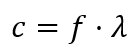c es la velocidad de la luz, que en el vacío es aproximadamente 3 x 10^8 metros por segundo.
f es la frecuencia de la onda, medida en Hertz (Hz).
λ es la longitud de onda, medida en metros
donde c es la velocidad de la luz (3 x10^8 m/s). En términos de longitudes de onda, el minúsculo segmento del espectro electromagnético conocido como región visible comprende de 0.00004 a 0.00007 cm.
Debido a las pequeñas longitudes de onda de la radiación luminosa, es más conveniente definir unidades de medida menores. Una unidad común es el nanómetro (nm).
Un nanómetro (1 nm) se define como la milmillonésima parte de un metro.
1 nm = 10^-9m = 10^-7 cm
La región visible del espectro electromagnético se extiende desde 400 nm para la luz violeta hasta aproximadamente 700 nm para la luz roja. Otras unidades antiguas son el milimicrón (mm), que es igual al nanómetro, y el angstrom (Å), que es igual a 0.1 nm.
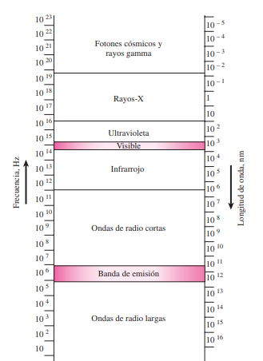Tippens, P. E. (2011). física conceptos y aplicaciones (7.ª ed., p. 740). México: MC GRAW HILL. México: MC GRAW HILL.
Algunos experimentos indican que la luz se comporta como una onda y otros indican que se comporta como una corriente de partículas. Y son estas dos teorías no son compatibles, pero ambas tienen validez. Los físicos llegaron a la conclusión de que esta dualidad de la luz se debe aceptar como un hecho de la vida. Se le conoce como la dualidad onda-partícula.
No es fácil poder visualizar esta dualidad. Para los físicos no se podían imaginar con facilidad una combinación de onda y partícula. En vez de ello, se reconoció que los dos aspectos de la luz son diferentes “rostros” que la luz presenta a los experimentadores. la dificultad surge de los procesos de pensamiento. Las imágenes (o modelos) visuales en la mente se basan en lo que se ve en el mundo cada día. No se puede ver directamente si la luz es una onda o una partícula, así que se realizan experimentos indirectos. Por último, la ecuación de Einstein E = hf en sí misma vincula las propiedades corpusculares y ondulatorias de un haz de luz. En esta ecuación, E se refiere a la energía de una partícula; y en el otro lado de la ecuación, se tiene la frecuencia f de la onda correspondiente.
GIANCOLI, D. C. (2009). física para ciencias y ingeniería volumen ll (4.ª ed., p. 997). México: Prentice Hal. México: Prentice Hal.
Reflexión: Cuando la luz incide en una superficie lisa, regresa a su medio original.
Cuando un rayo de luz alcanza la línea de separación entre dos medios con distinto índice de refracción, parte de la luz es reflejada “rebota”, mientras que otra parte es refractada (pasa al otro medio).
En estos casos es útil abordar el fenómeno de la reflexión desde la naturaleza corpuscular de la luz, mientras que el fenómeno de la refracción se explica de manera más sencilla si se considera la luz como a un conjunto de partículas. El hecho de que la luz se refleje o refracte depende del ángulo de incidencia
Refracción: La trayectoria de la luz cambia cuando penetra a un medio transparente.
La rapidez de la luz en el vacío es c = 2.99792458 x 10^8 m/s que generalmente se redonda a 3.00 x 10^8 m/s en el aire la rapidez de la luz es menor, y en otros materiales como vidrio o agua la rapidez es menor que en el vacío el cociente entre la rapidez de la luz en el vacío y la rapidez v en el material dado llamado índice de refracción, n, n = c / v
El índice de refracción nunca es menor que 1
Cuando la luz pasa de un medio transparente a otro con un índice de refracción diferente, parte de la luz incidente se refleja en la frontera. El resto pasa hacia el nuevo medio. Si un rayo de luz incide en un ángulo con la superficie (de manera que no sean perpendiculares), el rayo cambia de dirección conforme entra al nuevo medio. Este cambio en dirección, o desviación, se llama refracción.
GIANCOLI, D. C. (2009). física para ciencias y ingeniería volumen ll (4.ª ed., p. 997). México: Prentice Hal. México: Prentice Hal.
El índice de refracción de una sustancia va a depender de la longitud de onda incidente. Por lo que, si un haz de rayos de luz sin distintas longitudes de onda incide sobre un material refractante, cada radiación simple se desviará con un ángulo diferente. Este fenómeno se conoce con el nombre de dispersión de la luz.
La dispersión de la luz blanca, formada por una mezcla de radiaciones de distintas longitudes de onda, se pone de manifiesto al hacer pasar un haz de luz blanca por un prisma óptico. Así las distintas radiaciones que forman la luz blanca son refractadas con distintos ángulos y se obtiene una sucesión de colores denominado, espectro de la luz blanca, que fue descubierto por Newton.
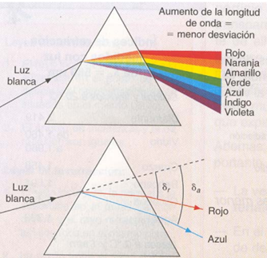cuántica y relatividad (5.ª ed., p. 70, 71). (2004). (5.ª ed.). México: UPV/EHU, Leioa. México: UPV/EHU, Leioa.
El mundo está lleno de ondas, los dos tipos principales son las ondas mecánicas y las ondas electromagnéticas. En el caso de las ondas mecánicas, algunos medios físicos se perturban; en el ejemplo de la piedra, los elementos del agua se perturban. Las ondas electromagnéticas no requieren un medio para propagarse; algunos ejemplos de ondas electromagnéticas son la luz visible, las ondas de radio, las señales de televisión y los rayos X. En esta parte del libro sólo se estudiarán las ondas mecánicas.
Serway, R. A. (2008). FÍSICA para ciencias e ingeniería (7.ª ed., p. 449). México, D.F: cengage learning. México, D.F: cengage learning.
La luz se puede describir como las fluctuaciones periódicas de una cantidad que tiene dirección y sentido. Existe la luz polarizada y la luz no polarizada. La luz polarizada se representa con un vector cuyo tamaño y dirección cambian al alterar la fase de la luz. Por lo general, la amplitud y la dirección varían de tal manera que el extremo del vector traza una elipse, lo que indica que la luz está polarizada elípticamente. Si los dos ejes de la elipse son iguales, la luz está polarizada circularmente. Cuando uno de los ejes es nulo, la elipse se convierte en un segmento recto, indicando que la luz está polarizada en un plano específico.
Un haz de luz no polarizada puede entenderse como la combinación de dos haces polarizados en diferentes planos sin una relación de fase constante, es decir, no son mutuamente coherentes. La dirección del vector que representa esta combinación no está correlacionada regularmente con su amplitud. La mayoría de los fenómenos de polarización están sujetos a dispersión, lo que significa que varían según la longitud de onda de la luz. En esta sección, exploraremos algunos de los efectos de la dispersión en la polarización de la luz, asumiendo inicialmente que la luz es monocromática.
DITCHBRN, R. (1982). óptica (1.ª ed., p. 502). México: reverte. México: reverte.
El ángulo crítico es el ángulo de incidencia mínimo en el que un rayo de luz, viajando de un medio más denso como el vidrio o el agua hacia un medio menos denso como el aire, se refracta a lo largo de la interfaz entre los dos medios y se refleja completamente hacia el medio más denso. Este fenómeno se denomina reflexión total interna.
Para calcular el ángulo crítico, es necesario entender primero la ley de Snell, que relaciona los ángulos de incidencia y refracción con las propiedades de los dos medios, conocidas como índices de refracción. La ley de Snell se expresa así:
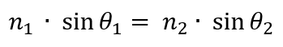Donde n1 y n2 son los índices de refracción de los medios 1 y 2 respectivamente, y θ1 y θ2 son los ángulos de incidencia y refracción. Para el ángulo crítico, θc, el ángulo de refracción θ2 será de 90 grados ya que la luz se desplaza a lo largo de la interfaz.
Entonces, para encontrar el ángulo crítico, utilizamos la ley de Snell y reorganizamos la fórmula:
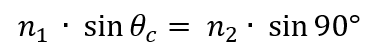Dado que el seno de 90 grados es 1, la fórmula se simplifica a:
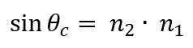El ángulo crítico se encuentra entonces aplicando la función inversa del seno (arcoseno) a ambos lados de la ecuación:
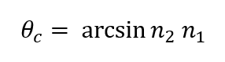Es fundamental recordar que este cálculo solo es válido si n1 es mayor que n2 y ambos son mayores que 0, ya que, de lo contrario, la reflexión total interna no ocurre.
En cuanto a la distancia focal de una lente convergente, esta es la distancia desde la lente hasta su punto focal, donde los rayos luminosos que llegan a la lente en un haz paralelo entre sí y al eje de la lente convergen. Para una lente divergente, el punto focal es el punto de convergencia de las prolongaciones de los rayos refractados hacia atrás. En el experimento, se busca medir la distancia focal de lentes convergentes en cinco puntos diferentes y comparar los resultados con la información de la base de datos de las lentes. Esto se logra generando un patrón de difracción a través de una abertura circular con un filtro espacial, luego se hace pasar este patrón a través de una lente convergente para colimar el haz de luz y formar un frente de onda plano que permita medir la distancia focal de la lente convergente.
GIANCOLI, D. C. (2009). física para ciencias e ingeniería volumen ll (4.ª ed., p. 1063). México: Prentice Hal. México: Prentice Hal.
Un láser es un dispositivo que genera un haz de luz coherente, intenso y estrecho, además de ser monocromático. La coherencia implica que todas las partes del haz tienen la misma fase a lo largo de cualquier sección transversal. El haz emitido es una onda plana prácticamente perfecta. En contraste, una fuente de luz común emite luz en todas direcciones, lo que resulta en una rápida disminución de la intensidad con la distancia, y la luz emitida es incoherente, es decir, las diferentes partes del haz no están en fase unas con otras. En una bombilla común, los átomos excitados emiten luz de forma independiente, cada fotón se comporta como un tren de onda corto que dura aproximadamente 10^-28 segundos, y estos trenes de onda no tienen relación de fase entre sí. Esto es exactamente lo opuesto a lo que ocurre en los láseres.
La operación de un láser se fundamenta en la teoría cuántica. Se ha observado que un átomo puede absorber un fotón solo si la energía del fotón (hf) coincide con la diferencia de energía entre un nivel energético ocupado del átomo y un estado excitado disponible. Si el átomo ya se encuentra en el estado excitado, puede realizar una transición hacia un estado inferior de forma espontánea, es decir, sin ningún estímulo externo, y emitir un fotón en el proceso. Sin embargo, cuando un fotón con la misma energía choca con un átomo excitado puede estimular al átomo para que realice la transición de forma más rápida hacia el estado inferior, emitiendo otro fotón idéntico al original. Este fenómeno se conoce como emisión estimulada: además del fotón original, se produce un segundo fotón de la misma frecuencia y fase, ambos viajando en la misma dirección. Esta es la base de la generación de luz coherente en un láser, de ahí el nombre "láser", que es un acrónimo de las palabras "Light Amplification by Stimulated Emission of Radiation" (amplificación de luz mediante emisión estimulada de radiación).
Ahora son muy comunes los láseres de diodo semiconductor, también conocidos como láseres de unión pn, que aprovechan la inversión de población de electrones entre la banda de conducción del lado n del diodo y la banda de valencia de energía más baja del lado p. Cuando un electrón hace una transición hacia un nivel inferior, puede emitir un fotón, el cual puede estimular a otro electrón a realizar una transición similar y emitir otro fotón en fase. Los espejos necesarios para la retroalimentación (como se muestra en la figura 39-19) se crean a partir de los extremos pulidos del cristal pn. Los láseres semiconductores se encuentran en reproductores de CD y DVD, así como en muchas otras aplicaciones.
Otros tipos de láseres incluyen los láseres químicos, que obtienen su energía de reacciones químicas en gases altamente reactivos; los láseres de colorante, que tienen una frecuencia ajustable; los láseres de gas CO2, que proporcionan una salida de alta potencia en el infrarrojo; y los láseres de estado sólido de tierras raras, como el láser de alta potencia Nd:YAG.
La excitación de los átomos en un láser puede ser continua o en pulsos. En un láser de pulsos, los átomos se excitan mediante entradas periódicas de energía. En un láser continuo, la energía de entrada es constante, lo que lleva a una excitación continua de los átomos hacia niveles inferiores y una emisión continua de un haz láser.
Es importante señalar que ningún láser genera energía por sí mismo. Se necesita proporcionar energía externa, y el láser convierte parte de esta energía en un haz láser intenso y estrecho.
GIANCOLI, D. C. (2009). física para ciencias e ingeniería volumen ll (4.ª ed., p. 1063). México: Prentice Hal. México: Prentice Hal.
La luminiscencia se define como la des-excitación de un átomo o molécula, por emisión de fotones. Este fenómeno ocupa un rol fundamental en la vida. Procesos como la visión y logros como el secuenciamiento del genoma humano yposible que no tenga acceso a algunas caracteristicas.
la tecnología de la información, serian imposibles de concebir sin la luminiscencia. La excitación del ma- terial luminiscente es un prerrequisito para la emisión. De acuerdo al origen de la excitación, el proceso luminiscente puede ser designado como:
• Fotoluminiscencia. Cuando se utilizan fotones de baja energía para excitarlo (como puede ser luz visible o U.V.)
• Electroluminiscencia. Cuando se utiliza un campo eléctrico para excitarlo.
• Quimioluminiscencia. Cuando la energía se deriva de una reacción química.
• Bioluminiscencia. Si la reacción química se pro- duce en un organismo vivo.
• Sonoluminiscencia. Cuando el material se excita por ultrasonido.
• Incandescencia. Cuando el material se excita térmicamente.
• Magnetoluminiscencia. Cuando la excitación es inducida por campos magnéticos
Gómez, R. C. C. (s.f.). Luminiscencia en polímeros semiconductores. Uanl.Mx. Recuperado el 04 de abril de 2024
La ampliación es el aumento de la magnitud, intensidad o tamaño de alguna cosa o fenómeno, como en el caso de la ampliación de una fotografía. En el contexto de la microscopía, la ampliación se refiere a la capacidad de hacer que los objetos pequeños parezcan más grandes, como hacer visible un organismo microscópico.
La resolución, por otro lado, se refiere a la capacidad de distinguir dos objetos entre sí. La microscopía óptica tiene límites tanto en su resolución como en su ampliación, y esto se debe a que los sistemas ópticos reales son complejos y las dificultades prácticas a menudo aumentan la distancia entre fuentes puntuales. A ampliaciones muy altas con luz transmitida, los objetos puntuales son vistos como discos difusos rodeados por anillos de difracción, llamados discos Airy.
La ampliación se cuantifica mediante un número calculado también llamado “aumento”, y mientras un aumento alto sin alta resolución puede hacer visibles microbios muy pequeños, no permitirá al observador distinguir entre microbios o partes subcelulares de un microbio. La amplificación también se refiere al aumento de la intensidad de una señal de sonido o eléctrica, que se emplea en algunos equipos de adquisición de imagen para mejorar la información que reciben.
En el contexto de los medios, la amplificación se refiere a la mejora del alcance de los contenidos para rentabilizar la inversión inicial en influencia y potenciar la imagen de una manera única.En la física, la ampliación se refiere a la ampliación o reducción de la imagen en espejos. La ampliación o reducción se calcula utilizando la ecuación
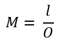donde M es la ampliación o reducción, adimensional, I es la altura de la imagen en metros, y O es la altura del objeto en metros.
La ampliación lateral o reducción de la imagen se puede obtener utilizando el modelo
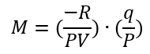donde las distancias se miden en metros para el S. I., R y f son positivas para espejos cóncavos y negativas para convexos, q es positiva para imágenes reales y negativa para virtuales, y p siempre positiva.
Ampliación y Resolución. (29 de octubre de 2022). LibreTexts español; Libretextos.
Uno de los dispositivos ópticos más importantes es la lente delgada. Su desarrollo basado en lentes se remonta a los siglos XVI y XVII, aunque el registro más antiguo del uso de anteojos data de finales del siglo XIII. En la actualidad, las lentes se encuentran en una amplia variedad de dispositivos como anteojos, cámaras, lupas, telescopios, binoculares, microscopios e instrumentos médicos. Generalmente, las lentes delgadas tienen forma circular y sus dos caras forman parte de una esfera.
También pueden existir superficies cilíndricas en algunas lentes, pero aquí nos enfocaremos en las esféricas, cuyas dos caras pueden ser cóncavas, convexas o planas. Se supone que la lente está hecha de un material transparente como vidrio o plástico con un índice de refracción mayor que el del aire exterior. Su eje es una línea recta que pasa por el centro de la lente y es perpendicular a sus dos superficies.
Si el diámetro de la lente es pequeño en comparación con los radios de curvatura de sus dos superficies, entonces se cumple el criterio para considerarla una lente delgada. Estas lentes son muy delgadas en comparación con su diámetro.
GIANCOLI, D. C. (2009). física para ciencias e ingeniería volumen ll (4.ª ed., p. 887). México: Prentice Hal. México: Prentice Hal.
El ángulo de Brewster (B ) es el ángulo de incidencia de un rayo para el cual el rayo refractado y el reflejado son perpendiculares
Cuando la luz incide con un ángulo igual al de Brewster el rayo reflejado está polarizado en una dirección perpendicular al plano de incidencia (plano del papel).
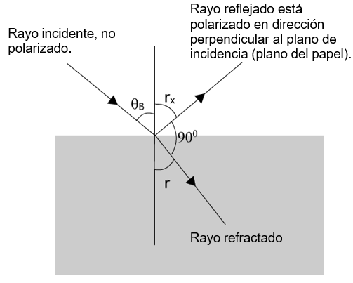Podemos escribir
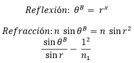Teniendo en cuenta la relación entre los ángulos:
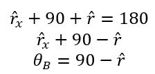Y como 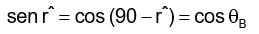
Podemos escribir la expresión (1) como:
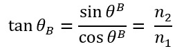Si n1= 1 (aire) la tangente del ángulo de Brewster nos da el índice de refracción del medio.
El reflejado son perpendiculares, E. Á. de B. es el Á. de I. de un R. P. el c. U. el R. R. A. y. (s.f.). ÁNGULO DE BREWSTE R IES La Magdalena. Avilés. Asturias. Fisquiweb.Es. Recuperado el 15 de abril de 2024
Los dispositivos de fibra óptica se utilizan para convertir señales eléctricas en señales ópticas, que luego se transmiten a través de fibras ópticas utilizando luz. Los dos tipos principales de fibras ópticas son monomodo y multimodo, y la elección de los dispositivos depende de factores como la velocidad y la compatibilidad con la fibra. Las fibras ópticas se utilizan en diversas aplicaciones, incluidas telecomunicaciones, endoscopios médicos e iluminación decorativa. El proceso de fabricación de fibras ópticas implica la creación de una preforma, que luego se calienta y se transforma en una fibra delgada. La transmisión de luz en las fibras ópticas se ve afectada por factores como el modo de polarización y la dispersión cromática, que pueden afectar el ancho de banda de la fibra. Los conectores ópticos se utilizan para conectar fibras ópticas.
Depau, C. (1998). Fisica 5 - optica electricidad magnetismo. Plus Ultra Publishing Company.